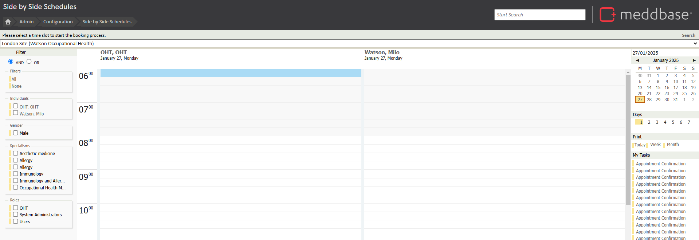
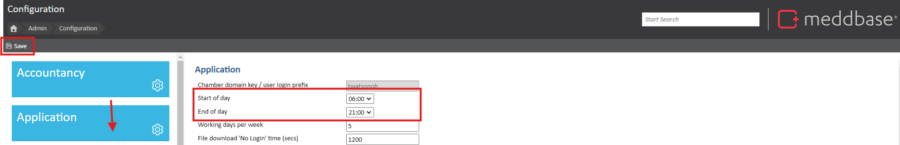

Meddbase provides the ability to customise various application settings, including defining the working hours for your chamber. This feature allows administrators to set a start and end time for the working day, ensuring that the system aligns with the operational hours of the business. These settings are applied universally across the chamber, so it's important to ensure they reflect your company's schedule accurately.
The purpose of this article is to guide users through the process of setting and adjusting the start and end hours for the working day in Meddbase.
In the example below, you can see that the Start of day begins at 06:00.

This can be changed by going to Admin > Configuration > Application. From the application menu, start and end times will be displayed and can be edited.
Once the changes have been made, please ensure that you save them by clicking the save icon on the top left of the screen.

This will change the start and end times (operating hours) across the chamber, ensuring that calendar views and other time-dependent features are relevant and aligned with your company’s operational hours.